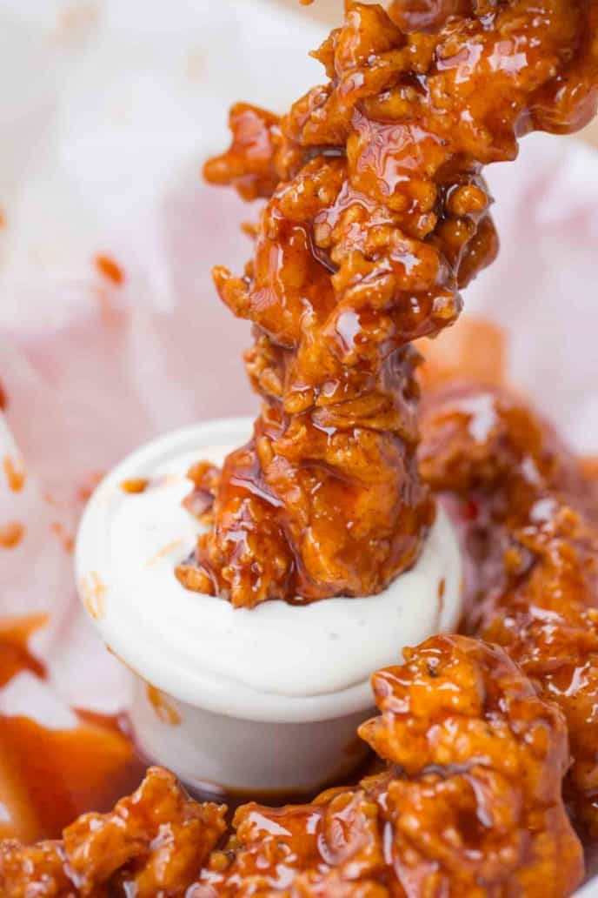

Buffalo Chicken Tenders

Description
Buffalo Chicken Tenders made with a classic buttermilk soaked extra crispy chicken tender dredged in homemade buffalo sauce.
Ingredients
- 4 Chicken Mini Fillets
- 1 cup buttermilk
- 1 teaspoon hot sauce
- 2 large eggs beaten
- 2 cups flour
- 2 1/2 teaspoons salt
- 3/4 teaspoon pepper
- 1/8 teaspoon paprika
- 1/8 teaspoon garlic Powder
- 1/8 teaspoon baking Powder
- canola oil for frying
- Franks Red Hot Buffalo Wing Sauce
Instructions
- Cut the chicken breasts into four tenders each and soak them in a bowl with the buttermilk and hot sauce for 30 minutes.
- Add the eggs to one bowl and the flour and spices to a second bowl.
- Dip each piece of chicken from the buttermilk bowl to the flour mixture.
- Dip it into the eggs then back into the flour mixture.
- Shake excess flour gently off and put the chicken onto a baking sheet.
- Repeat with all the pieces.
- Heat the oil (three inches deep) in a dutch oven on medium high heat to 350 degrees.
- Fry the chicken in small batches for 5-7 minutes or until golden brown.
- Prep the buffalo sauce by warming in a saucepan.
- Dip the tenders into the sauce and serve immediately.
Back to Recipes